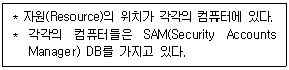
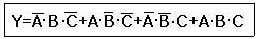
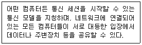

PC정비사-1급 (2014-10-12 기출문제)
1과목: PC운영체제
1. 일정기간이나 특정 기능을 제한하여 사용하다가, 정식으로 사용하려면 그에 해당하는 비용을 지불해야 하는 소프트웨어는?
- 그래픽 소프트웨어
- 유틸리티
- 셰어웨어
- 백신
(정답률: 78%)

2. 운영체제의 주된 기능이 아닌 것은?
- 컴퓨터 시스템의 초기화 기능
- 데이터 정의 기능
- 효율적인 자원관리 기능
- 효율적인 자원할당 기능
(정답률: 42%)
3. 운영체제에 대한 일반적 분류 기준으로 동시 사용자 수, 작업 처리 방법, 사용 환경 등을 들 수 있다. 이러한 기준에 따른 운영체제의 설명 중 잘못된 것은?
- DOS 시스템은 단일 사용자용 - 단일 태스킹 운영체제이다.
- Windows Server는 단일 사용자용 다중 태스킹 운영체제이다.
- Unix, Linux는 다중 사용자용 다중 태스킹 운영체제이다.
- Unix, Linux, Windows 계열의 운영체제는 시분할 방식의 처리를 지원하는 운영체제이다.
(정답률: 60%)
4. 리눅스 명령을 이용하여 ICQA 디렉터리와 그 하위 디렉터리까지 모든 파일을 메시지없이 강제로 삭제하기 위한 명령은?
- rm -i ICQA
- rm -ir ICQA
- rm -rf ICQA
- rm -ra ICQA
(정답률: 54%)
5. Windows XP에서 파일의 복사, 이동, 삭제 및 복구에 대한 다음 설명 중 잘못된 것은?
- 디스크나 디스켓을 전부 지우고 싶을 경우 해당 디스크나 디스켓을 휴지통에다 끌어다 놓으면 전체로 삭제된다.
- Shift + Del 키에 의해 삭제된 파일은 휴지통에 삭제된 파일의 정보가 남지 않기 때문에 휴지통으로부터 복구할 수 없다.
- 폴더 창으로부터 삭제하고자 하는 파일들을 선택한 후 이 선택된 파일들을 끌어다 놓기(Drag and Drop) 기능을 이용하여 휴지통에 갖다 놓아도 삭제가 이루어진다.
- 명령 프롬프트 창에서 지운 파일은 휴지통으로부터 복구가 불가능하다.
(정답률: 56%)
6. 64비트 Windows XP에 대한 설명으로 올바른 것은?
- 32비트 전용 CPU에도 64비트 운영체제를 설치할 수 있다.
- 64비트 시스템을 꾸미기 위해서 메인보드, 그래픽 카드, 하드디스크 등 모든 하드웨어가 64비트용 이어야 한다.
- 기존의 32비트 장치 드라이버 파일을 그대로 사용할 수 있다.
- 128GB의 RAM과 16TB의 가상 메모리를 지원한다.
(정답률: 40%)
7. Windows XP의 안전모드 옵션이 아닌 것은?
- 안전 모드(네트워킹 사용)
- 안전 모드(명령 프롬프트 사용)
- 디버그 모드
- SVGA 모드 사용
(정답률: 68%)
8. 시스템 도구 모음의 하위 기능으로 잘못된 것은?
- 시스템 구성 유틸리티
- 디스크 조각 모음
- 디스크 정리
- 예약된 작업
(정답률: 37%)
9. Windows XP의 '시작' 버튼과 '작업 표시줄' 사이에 바로가기 아이콘을 등록시켜 빠르게 작업을 실행 또는 이동할 수 있는데 이것의 명칭은?
- Quick Launch(퀵 런치)
- Job Launch Bar(작업 런치바)
- Job List Expression Bar(작업 목록 표시줄)
- Quick Job List Expression Bar(퀵 작업 목록 표시줄)
(정답률: 44%)
10. Windows XP Professional에서 다음과 같은 특징을 갖는 환경은?

- Domain 환경
- Workgroup 환경
- Professional 환경
- Server 환경
(정답률: 58%)
11. 디스크 어레이(Array) 구축 방식 중 Windows XP에서 구축할 수 없는 것은?
- Raid-0 볼륨
- Raid-1 볼륨
- Raid-4 볼륨
- Raid-5 볼륨
(정답률: 50%)
12. 네트워크 그룹상에 표시되는 컴퓨터 이름을 변경할 때 가장 올바른 것은?
- [Internet Explorer] - [속성]
- [내 컴퓨터] - [시스템 등록 정보]
- [제어판] - [내게 필요한 옵션]
- [작업 표시줄] - [속성]
(정답률: 71%)
13. Windows XP의 레지스트리에 대한 설명 중 잘못된 것은?
- 텍스트 기반이며, 크기가 32KB를 넘지 못한다.
- 정렬된 계층구조를 가진다.
- HKey_Users키로 사용자별 정보를 지원한다.
- 원격지에서 관리와 시스템 정책을 할 수 있다.
(정답률: 39%)
14. Windows XP의 ‘실행’ 명령창을 통해 사용할 수 있는 명령에 대한 설명으로 잘못된 것은?
- dfrg.msc - 디스크 조각 모음을 실행 시킨다.
- Msconfig - 시스템 구성 유틸리티를 실행 시킨다.
- Mssystem - 시스템 등록 정보를 확인 할 수 있다.
- iexplore - 인터넷 익스플로러를 실행 시킨다.
(정답률: 60%)
15. Windows에서 특정한 IP 주소에 대하여 IP 충돌이 일어날 경우, 어떤 컴퓨터와 문제가 있는지 알아볼 때 사용하는 명령어는?
- ping
- nbtstat
- tracert
- netstat
(정답률: 43%)
2과목: PC주변기기
16. 다음은 메모리를 외형상 분류한 것이다. 성격이 다른 하나는?
- DIP(Dual Inline Package)
- SIMM(Single Inline Module Memory)
- SODIMM(Small Outline DIMM)
- SRAM(Static RAM)
(정답률: 41%)
17. ECC SDRAM은 몇 Bit의 대역을 가지는가?
- 32 Bit
- 64 Bit
- 72 Bit
- 128 Bit
(정답률: 26%)
18. 부트 섹터(Boot Sector)의 정보로 잘못된 것은?
- 트랙 당 섹터의 개수
- 헤드의 개수
- 파일 할당 테이블의 개수
- 실질적인 파일의 내용
(정답률: 58%)
19. 가상 메모리는 하드디스크를 주기억 장치처럼 사용하는 메모리 관리 방법 중의 하나이다. 가상 메모리 시스템에서는 프로그램 실행 도중에 할당받지 못한 메모리에 접근하려고 할 때 오류가 발생하게 된다. 이때 가상 메모리를 사용하기 위해서 수행되는 과정을 무엇이라고 하는가?
- Booting
- Load
- Memory Allocation
- Swapping
(정답률: 52%)
20. CD-ROM에 대한 설명 중 잘못된 것은?
- CD-ROM은 많은 양의 자료를 저장할 수 있는 콤팩트 디스크이다.
- CD-ROM의 표준인 ISO 9660 등이 있다.
- CD-ROM은 컴퓨터와 연결하는 인터페이스 방식에 따라 SCSI , E-IDE, S-ATA 등의 방식으로 나눌 수 있다.
- 최신의 CD-ROM은 데이터를 재기록할 수 있다.
(정답률: 53%)
21. 키보드 제어기(Keyboard Controller)의 기능으로 옳지 않은 것은?
- 키보드를 자체 검진하며, 효율적으로 키보드를 사용할 수 있도록 한다.
- CPU와 정보를 교환할 수 있다.
- 비디오 제어기, 디스크 제어기 등의 정보의 흐름을 제어한다.
- 문자의 입력과정에 발생된 전기적 신호를 8비트 신호로 변환한다.
(정답률: 43%)
22. PC에 마우스를 연결하여 사용하는데 이용되지 않는 인터페이스는?
- USB
- PS/2
- Serial
- IEEE1394
(정답률: 53%)
23. 포토샵 프로그램에서 스캐너의 이미지를 입력하기 위해 사용하는 드라이버는?
- TWAIN
- TABLE
- FirmWare
- Burn-Proof
(정답률: 49%)
24. 프린터의 인쇄 방식과 특징을 설명한 것 중 올바른 것은?
- 잉크젯 프린터 - 비충격식 프린터로 여러 개의 점을 조합하여 문자를 인쇄한다.
- 도트 매트릭스 프린터 - 비충격식 프린터로 소음이 크고 인쇄 속도가 늦다.
- 열전사 프린터 - 충격식 프린터로 유지비가 저렴하고 인쇄물을 오랫동안 보관한다.
- 레이저 프린터 - 비충격식 프린터로 높은 해상도와 유지비가 저렴하고 빠른 인쇄가 가능하다.
(정답률: 49%)
25. 운영체제에서 그래픽 카드를 제어할 수 있는 표준규격이 아닌 것은?
- DirectX
- Open GL
- DCI
- S/PDIF
(정답률: 56%)
26. L2 캐시의 동작 방식이 아닌 것은?
- 비동기 방식
- 동기 방식
- 슬롯 방식
- 파이프라인 버스트 방식
(정답률: 50%)
27. AMD CPU는 CPU 이름을 “애슬론 64-X2 브리즈번 5200+”과 같이 표시한다. 이 이름 중 ‘5200+’의 의미는?
- FSB
- 모델 넘버
- 버전
- 작동 클럭
(정답률: 52%)
28. DMA에 관한 설명 중 틀린것은?
- 메인 메모리와 각 장치들끼리 CPU를 거치지 않고 데이터를 직접 전송하는 기술이다.
- 메모리와 주변 장치 간의 데이터 전송통로를 DMA 채널이라고 한다.
- PIO모드는 DMA모드보다 향상된 기술로 DMA모드의 2배 이상 속도로 데이터전송이 가능하다.
- 하드디스크, CD-ROM 등에 사용된다.
(정답률: 36%)
29. 'IEEE 1284'는 무엇에 대한 규격인가?
- 직렬포트
- USB
- 병렬포트
- LAN
(정답률: 45%)
30. 사운드카드가 음을 만들기 위해 사용하는 방법이 아닌 것은?
- PCM 방식
- FM 방식
- AM 방식
- Wavetable 방식
(정답률: 42%)
3과목: 디지털 논리회로
31. 전가산기(full adder)의 설명으로 옳은 것은?
- 입력비트3개의 합과 출력올림수를 구하는 조합논리회로
- 입력비트2개의 합과 출력올림수를 구하는 조합논리회로
- 2개의 반가산기와 1개의 AND게이트로 구성
- 2개의 반가산기와 1개의 NOT게이트로 구성
(정답률: 39%)
32. ASCII 부호는 몇 비트로 구성되어 있는가?
- 6비트
- 7비트
- 8비트
- 9비트
(정답률: 44%)
33. 16진수 1CD를 2진수로 변환하면?
- 111011100
- 100111100
- 111001101
- 111101101
(정답률: 48%)
34. 다음 논리식과 같은 3개의 입력을 가진 논리 게이트는?

- AND
- OR
- NAND
- XOR
(정답률: 35%)
35. 다음 Gate 중 팬 아웃(Fan out)이 가장 큰 것은?
- DTL gate
- Diode logic gate
- RTL gate
- TTL gate
(정답률: 31%)
4과목: PC유지보수
36. ATI의 크로스파이어(CrossFire)를 사용하기 위한 조건으로 잘못된 것은?
- 메인보드에는 라데온 익스프레스 X200 칩셋 이상이 장착되어야 한다.
- 동작 클럭만 일치하다면 AMD와 NVIDIA의 VGA로도 구성이 가능하다.
- PCI-Express 기반이므로 구형 AGP기반 그래픽카드는 사용이 불가능하다.
- 크로스파이어 에디션 그래픽카드를 반드시 마스터로 설정하고, 표준 그래픽카드는 슬레이브로 설정해야 한다.
(정답률: 52%)
37. 컴퓨터에 전원을 공급한 후에 BIOS 부팅 화면부터 심하게 흔들리더니, Windows로 부팅한 후에도 화면이 심하게 흔들리고 있다. 모니터를 다른 것으로 교체해도 마찬가지일 경우, 이에 대한 원인으로 잘못된 것은?
- 하드디스크 커넥터 이상
- 모니터 연결 커넥터의 고장
- 그래픽 카드에서 전송하는 신호 오류
- 그래픽 카드 장착상태 불량
(정답률: 37%)
38. Windows를 사용하던 중 “KERNEL32.DLL에서 잘못된 연산이 수행되었습니다.”라는 메시지가 나타나는 이유로 잘못된 것은?
- 어플리케이션간 메모리 충돌이 일어날 때
- KERNEL32.DLL의 버전이 다르거나 손상된 경우
- CPU와 메모리의 FSB가 맞지 않을 경우
- 메인 메모리가 불량인 경우
(정답률: 52%)
39. 시스템의 부팅 속도가 느려지는 원인으로 잘못된 것은?
- 램(RAM)에 기록된 파일의 단편화 심화
- 하드디스크 파일의 단편화 심화
- CMOS Setup에서의 Cache가 disable로 설정
- 바이러스 감염
(정답률: 52%)
40. 부팅 관련 정보를 담고 있는 BOOT.ini 파일의 옵션에 대한 설명 중 잘못된 것은?
- /SAFEBOOT : 안전모드로 부팅한다.
- /NOGUIBOOT : 기본VGA 모드로 시작한다.
- /BOOTLOG : NTBLOG.TXT파일을 생성한다.
- /SOS : 로딩 되는 제어기를 표시하여 문제가 발생한 제어기를 쉽게 파악하도록 한다.
(정답률: 41%)
41. 리눅스 파티션의 종류가 아닌 것은?
- Primary 파티션
- Extended 파티션
- Logical 파티션
- Physical 파티션
(정답률: 50%)
42. 컴퓨터를 부팅할 때마다 “BIOS Checksum Error”가 발생한다. BIOS Setup에서 설정을 변경하고 재부팅하면 이상이 없지만 전원을 끈 후에 다시 켜보면 같은 증상이 나타난다. 원인으로 타당한 것은?
- CMOS 배터리 방전이 원인이다.
- HDD의 부트섹터 오류가 원인이다.
- CPU의 무리한 오버클록이 원인이다.
- BIOS의 버전이 낮은 것이므로 업데이트하면 해결된다.
(정답률: 64%)
43. 컴퓨터 부팅 시 "8042 Gate-A20 Error"라는 메시지가 나왔다. 그 원인으로 올바른 것은?
- 키보드 연결 불량
- 키보드 컨트롤러 고장
- 마우스 연결 불량
- 마우스 포트 고장
(정답률: 52%)
44. CDROM 연결 설정에 대한 설명 중 잘못된 것은 ?
- CDROM은 전원선을 연결해야 한다.
- IDE 케이블을 마스터-슬레이브 점퍼를 맞추어 연결한다.
- IDE 케이블을 통해 CDROM과 HDD를 함께 연결하여 사용할 수 있다.
- CDROM의 오디오 단자는 라인-인이며, 사운드카드에 CD-인을 연결한다.
(정답률: 62%)
45. PnP 장치가 관리하지 않는 것은?
- DMA 채널
- TCP 포트
- IRQ
- 입출력 Address
(정답률: 52%)
46. BIOS에 의한 부팅 시 동작하는 파일에 대한 설명 중 잘못된 것은?
- .sys 파일은 드라이버 설정과 관련된다.
- .dll 파일은 프로토콜과 관련된다.
- 운영체제의 식별을 위해 MBR에 정보를 저장한다.
- dll 내의 함수를 호출하는 프로그램은 boot.int 이다.
(정답률: 32%)
47. PC가 부팅되기 전에 자체 진단 프로그램인 POST(Power On Self Test)가 전달하는 내용이 아닌 것은?
- 마우스의 이상 유무 검사
- 주기억 장치의 이상 유무 검사
- 키보드의 이상 유무 검사
- 그래픽 카드의 이상 유무 검사
(정답률: 58%)
48. 아날로그 비디오 신호를 받고 보낼 수 있는 그래픽 카드에 붙이는 이름은?
- MPEG
- VIVO
- DVI
- CRT
(정답률: 35%)
49. E-IDE HDD와 CD-ROM 장치를 연결할 때 최적의 전송속도를 낼 수 있는 방법은?
- HDD는 프라이머리 마스터, CD-ROM은 세컨드리 마스터로 한다.
- HDD는 프라이머리 마스터, CD-ROM은 프라이머리 슬레이브로 한다.
- HDD는 프라이머리 마스터, CD-ROM은 세컨드리 슬레이브로 한다.
- CD-ROM은 프라이머리 마스터, HDD는 세컨드리 마스터로 한다.
(정답률: 33%)
50. CPU, 메인보드칩셋, 메모리가 서로 호환 되지 않는 것은?
- 코어 2듀오 E8400 - intel G41 - DDR3 10600
- 셀러론 D 프레스캇 350 - Intel 865 - DDR 3200
- 셀러론 G 1610 - intel P43 - DDR2 8500
- 코어 i5 3570 - Intel B75 - DDR3 12800
(정답률: 58%)
5과목: PC네트워크
51. 다음에 설명하는 네트워크 모델은?

- 클라이언트/서버 모델
- 마스터/슬레이브 모델
- Peer to Peer 모델
- N2N 모델
(정답률: 61%)
52. 패킷 스위칭 기법에 대한 설명으로 잘못된 것은?
- 패킷은 통신회선과 패킷스위치를 통해 전달된다.
- store-and-forward 전송방식을 이용한다.
- 링크에 도착한 패킷을 저장하기 위한 버퍼가 필요 없다.
- 패킷스위칭은 일반적으로 통계적 다중화(StatisticalMultiplexing)을 이용한다.
(정답률: 53%)
53. 임의의 스위칭 허브에서 MDIX, MDI 전환기능을 지원하지 않을 경우 스위칭 허브와 스위칭 허브를 연결하기 위한 방법으로 적합치 않은 것은?
- 스위칭 허브 <- (CrossLink) -> 스위칭 허브
- 스위칭 허브 <- (Link) ->스위칭 허브
- 스위칭 허브 <- (Matrix Cable) -> 스위칭 허브
- 스위칭 허브 <- (Port Trunk) -> 스위칭 허브
(정답률: 44%)
54. 다음 중 허브에 대한 올바른 설명은?
- 하나의 통신회선에 여러 대의 시스템을 연결하여 자료 신호를 증폭하는 장치이다.
- 브로드 캐스트 패킷을 필터링 한다.
- 트래픽을 감소시킨다.
- LAN과 LAN, LAN과 WAN을 연결할 때 사용하는 장비이다.
(정답률: 32%)
55. LAN 구간에서 현재 서버와 클라이언트간의 통신이 정상적으로 이루어지는지 확인하고 싶을 때 사용할 수 있는 방법으로 잘못된 것은?
- ipconfig 명령어를 사용해 확인한다.
- ping 명령어를 사용해 확인한다.
- 실행메뉴에서 "\\서버_이름" 으로 검색한다.
- 네트워크 환경에서 서버를 검색한다.
(정답률: 55%)
56. 다음 중 LAN에 사용되는 방식 중 전송속도가 가장 빠른 것은?
- 10BASE-2
- FDDI
- 10BASE-5
- 10BASE-T
(정답률: 41%)
57. 두 개 이상의 동일한 LAN 사이를 연결하여 네트워크 범위를 확장하고 스테이션 간의 거리를 확장해 주는 장치로 올바른 것은?
- Repeater
- Router
- Ramdac
- Gateway
(정답률: 45%)
58. www.icqa.or.kr 사이트에 있는 index.html 이라는 파일을 http와 8092 포트를 이용하여 열고자 한다. 올바른 URL은?
- http://www.icqa.or.kr/index.html:8092
- http://8092:www.icqa.or.kr/index.html
- http://www.icqa.or.kr:8092/index.html
- http:8092//www.icqa.or.kr/index.html
(정답률: 49%)
59. 가정용 인터넷망에 관한 설명 중 잘못된 것은?
- ADSL은 비대칭의 송수신 속도를 가지고 있다.
- UTP 케이블을 이용하여 인터넷을 이용할 경우10Mbps 이상의 속도는 지원이 불가능하므로, 10Mbps 이상의 속도를 원할 경우 전체 선로를 광케이블로 구성해야 한다.
- FTTH는 기존의 전화망을 이용하여 연결할 수 없다.
- VDSL은 비대칭의 송수신 속도를 가지고 있다.
(정답률: 50%)
60. 인터넷 보안에 대한 설정으로 잘못된 것은?
- Windows XP에는 개인 방화벽 기능이 내장되어 있지 않다.
- Windows XP에서 시스템 발생오류, 보안감사 같은 여러 가지 사건들의 기록을 확인하는 메뉴는 “이벤트 뷰어”이다.
- 인터넷 익스플로러에서 내용 관리자 암호를 사용해 허락받지 않은 사이트에 들어가는 것을 막을 수 있다.
- 인터넷 익스플로러의 보안수준을 "높음"으로 설정해야 인터넷 서핑시 안전하다.
(정답률: 58%)